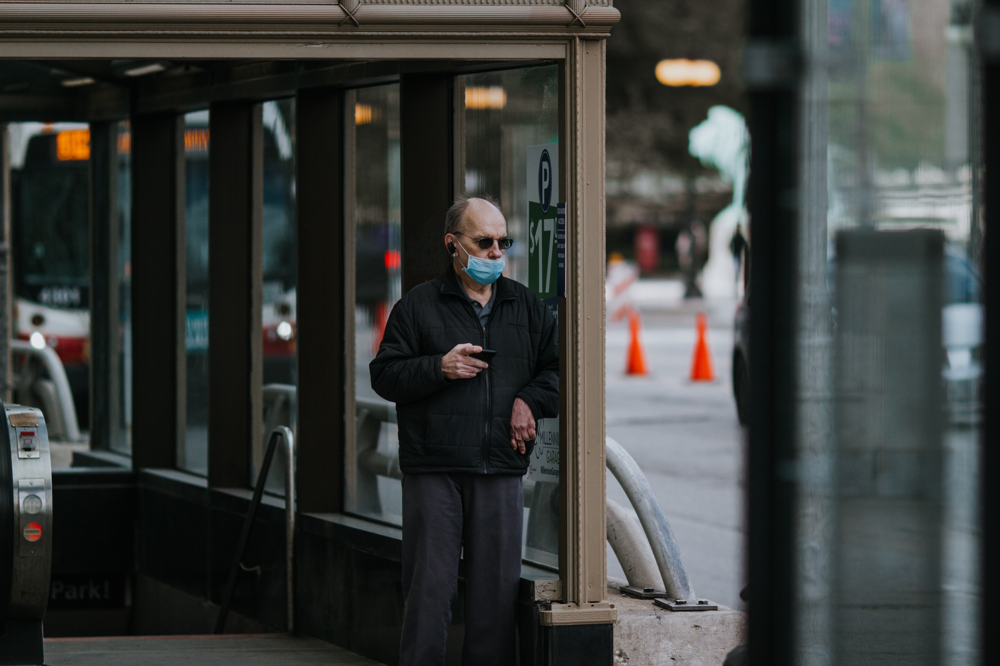

Tüm dünyayla birlikte ülkemizi de derinden etkileyen Covid-19 enfeksiyonu önce akciğerleri tahrip ederek nefes darlığı, öksürük, solunum yetmezliği ve zatürreye neden olurken, bazen organ yetmezliğine kadar gidebiliyor. Bu biyolojik ajana bağlı gelişen tablonun düzelmesinde; ilaçlar, sağlıklı beslenme ve güçlü bağışıklık sisteminin yanı sıra bilinçli ve düzenli yapılan, eklem ve kas hareketlerine eklenen solunum egzersizleri de çok önemli rol oynuyor.
Fizik Tedavi ve Rehabilitasyon Uzmanı Prof. Dr. Halil Koyuncu, “Gerek Covid-19 enfeksiyonuna karşı akciğerleri güçlendirerek korunmada, gerekse Covid sonrası iyileşmenin hızlandırılması ve akciğerlerin yenilenmesinde kas ve eklem hareketleri ile birlikte yapılacak solunum egzersizleri büyük önem taşımaktadır. Böylelikle, vücuda taze hava girişi sağlanmış, kirli hava da vücuttan atılmış olacaktır. Bu egzersiz veya hareketler, hastayı yormayacak şekilde gün içerisinde düzenli yapılmalıdır. Oturarak ya da yarı yatar pozisyonda yapılabilir. Egzersiz aralarında dinlenme molaları verilmelidir” diyor.

Test sayısı 27 milyon 223 bin 445'e ulaştı. Vaka sayısı 2 milyon 380 bin 665, vefat sayısı 23 bin 832, ağır hasta sayısı 2 bin 265 oldu.
Haftalık verilere göre, bu hafta hastalarda zatürre oranı yüzde 4,5, yatak doluluk oranı yüzde 45,5, erişkin yoğun bakım doluluk oranı yüzde 60,6, ventilatör doluluk oranı yüzde 31,4, ortalama temaslı tespit süresi 8 saat, filyasyon oranı ise yüzde 99,9 olarak gerçekleşti..
Türkiye saati ile 20 itibarıyla Covid-19 aşısı olanların sayısı ise 674 bin 716'ya çıktı.
Sağlık Bakanlığı, Türkiye’nin COVID-19 hasta tablosunu açıkladı. 16 Ocak Cumartesi gününün verilerine göre son bir günde yapılan 156 bin 792 testle birlikte toplam test sayısı 27 milyon 223 bin 445’e ulaştı.
168 KİŞİ HAYATINI KAYBETTİ
Güncel tabloya göre semptom gösteren 902 hastayla birlikte 7 bin 550 yeni vaka tespit edildi, toplam vaka sayısı 2 milyon 380 bin 665’e çıktı. Can kaybı da 168 artarak 23 bin 832’ye yükseldi.